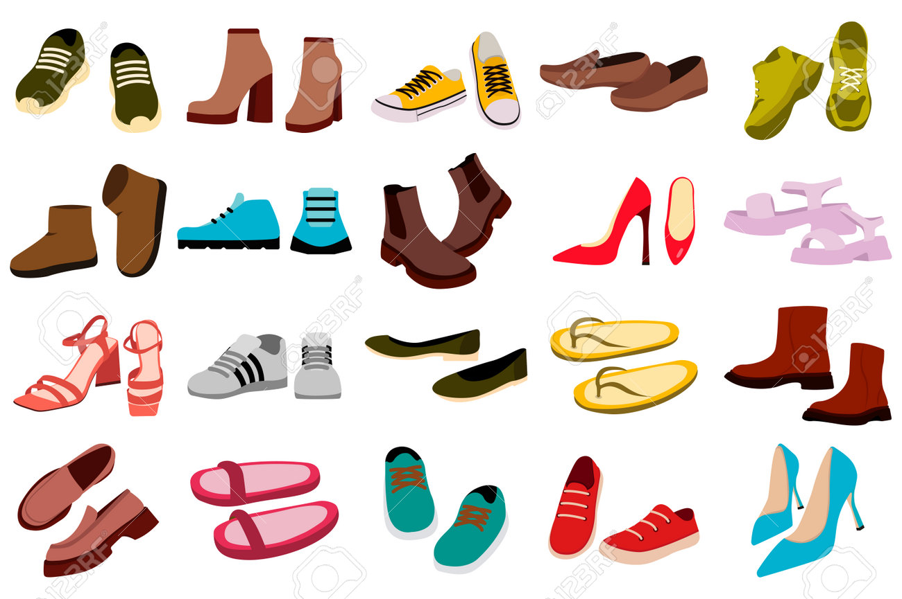
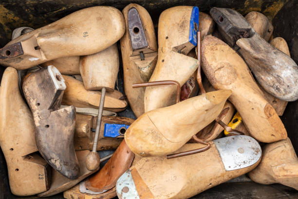
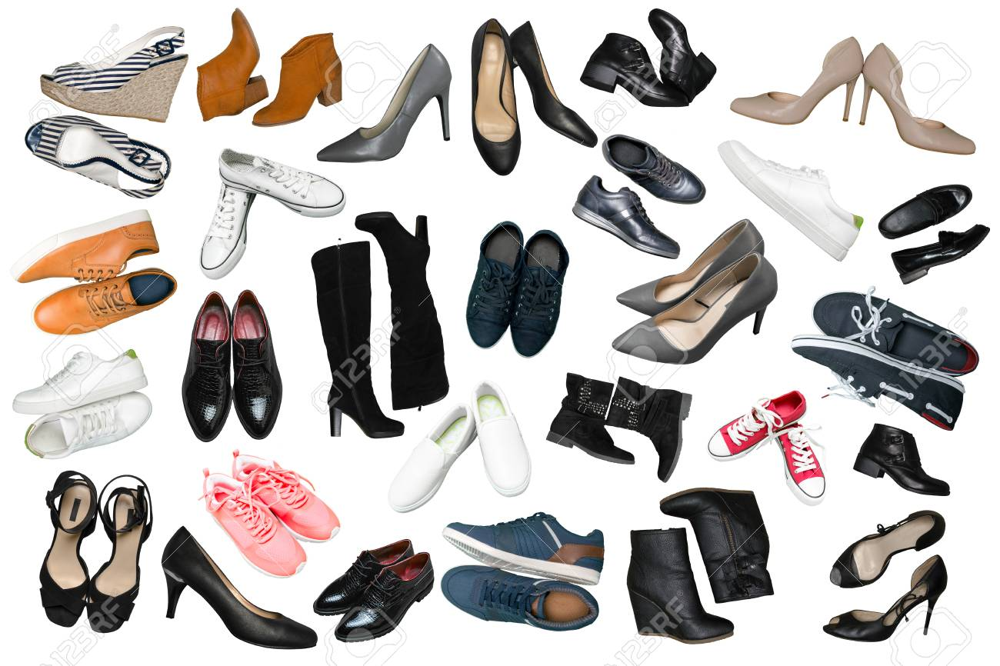
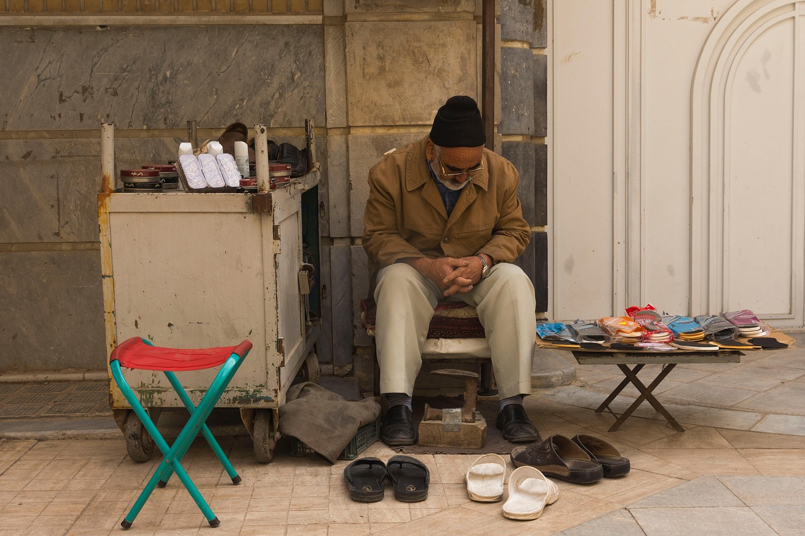
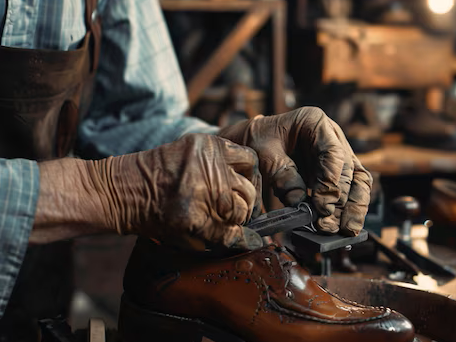

¿Cómo se hace un buen zapato?
- ¿Qué conocemos como un buen zapato?
- ¿Cómo se hace un zapato?
- Las herramientas del zapatero
- El manual del zapato
Las medidas y el pie
- Toma de Medidas
- El pie: Contorno, longitud, anchura y volumen
- El pie: Huella y perspectiva
- El puente y las malformaciones más frecuentes
- Sistema óseo y musculatura del pie
- Numeración del ancho
- La documentación del pie
- Numeración del calzado (francesa, inglesa, americana y métrica)

La horma
- Para qué sirven las hormas
- Zapatero a tus zapatos
- Las hormas simétricas y asimétricas
- Elaboración manual y preparación mecánica de una horma a medida
- Copia preliminar, definitiva y últimos toques de una horma
- El material de la horma
- Hormas a medida (método de sustracción adición y hormas corregidas)
- Características de las hormas, prueba y duración
Tipos de zapatos
- El zapato a medida
- El zapato hace a la persona
- Moda en los pies
- Oxford
- Full-Brogue y semi-Brogue
- Blucher
- Los zapatos de verano
- El zapato formal de cordones y costura presuina
- El zapato formal de cordones y costura inglesa
- Los mocasines
- Mocasines a la italiana
- Monkstrap: El zapato con hebilla
- Los bicolores - clásico americano
- Sinónimo de impermeable
- Clásicos
- De Golf
- Botas
- * La bota - Su historia (Lic. Richard Danta)
- * Las Botas y su decoración: el siglo XlX (Lic. Richard Danta)
- * Las Botas y su decoración: el siglo XX (Lic. Richard Danta)
- * Una historia de la bota vaquera D. W. Frommer II.

La pala
- El corte
- Accesorios de la pala
- Preparativos para la unión de las piezas de la pala
- El festoneado
- La perforación (brogueing)
- Decoraciones sobre la puntera
- Refuerzos en la pala
- El aparado de la pala
- Retoques finales
Cueros y pieles
- La piel de la pala
- Cuero limpio
- El curtido
- Recurtido
- El curtido vegetal
- Boxcalf
- Piel bovina
- Pieles exóticas
- Cordobán
- Gama de colores y combinaciones de colores y piel
- La piel de la suela
- El forro de refuerzo
- El forro de la pala

Los zapateros
- El taller de zapatería
- Los gremios de los zapateros
- La industrialización y sus consecuencias
Fabricación y armado del zapato
- El montado del zapato
- El zapato de vira cosida
- El zapato de cosido doble
- Las piezas inferiores y el corte
- La palmilla
- Preparación de la pala
- Contrafuerte del talón
- El engrudo
- El tensado
- El amartillado del zapato
- El cabo del zapatero
- El complemento de la vira: el revirón
- Aplicación de la suela
- Diseño artesanal de una sandalia

- La suela exterior y el marcado de los puntos
- La costura de la entresuela y de la suela exterior
- El tacón
- El parce de goma
- Pulido de la suela y del tacón
- Ornamentos de la suela y del tacón
- El deshormaje
- Últimos retoques en el interior del zapato
- El pulido final del zapato
- Cordones adecuados
- Diseño artesanal de un mocasín indio

El cuidado del zapato
- La limpieza del zapato
- Diez reglas para el cuidado del zapato